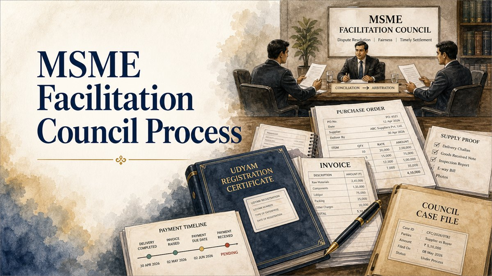

Bihar published its new MSEFC Rules on 29 October 2026. The new text supersedes the 2007 Rules and changes Council allocation, filing and fees. Its references to amended central provisions must be read subject to their actual commencement. Verify the applicable forum and directions in each matter.
Current filing channel (reviewed 27 November 2026): Fresh delayed-payment applications by micro and small enterprises are filed through MSME ODR from 15 October 2025, as confirmed by the Ministry in Lok Sabha Unstarred Question No. 2139, 12 February 2026. Preserve legacy Samadhaan records and verify existing case status with the concerned Council before considering any fresh filing. Current upload, service, fee and hearing instructions must be verified separately.

What changed in Bihar on 29 October 2026?
The Bihar Gazette (Extraordinary), No. 1320, 29 October 2026 publishes the Micro and Small Enterprises Facilitation Council Rules, 2026. Rule 1 provides for immediate effect and application to pending and new matters, subject to transfer of pending cases. Rule 17 preserves earlier actions to the extent consistent with applicable law. The 2007 procedure is no longer a safe default.
Which Council should receive the claim?
| Supplier and buyer | Allocation described in Rule 9 |
|---|---|
| Bihar supplier; buyer within Bihar | District Council of the supplier's registered address |
| Bihar supplier; buyer outside Bihar (including mixed respondents) | State Council with original jurisdiction |
Rule 9 also provides for early jurisdiction objections and transmission to the correct Council with preservation of the original institution date. Confirm actual Council constitution, assignment and case status before relying on this procedure; the State Council is not an appellate body for district awards.
Filing, documents and fees
Rules 6 and 10 contemplate physical submission or electronic filing, including pleadings and service. Rule 6 requires claim particulars, an affidavit with court fee, simultaneous buyer service, and a buyer response within 15 days, extendable by up to 15 days for sufficient cause.
Rule 14 refers to a processing fee based on Schedule IV of the Arbitration and Conciliation Act, 1996. Verify the current fee calculation and payment directions; do not use the old Rs 5,000 ceiling as current law.
Prepare the enterprise record, contract and amendments, invoice-by-invoice deliveries, payment terms, receipts, credit notes and interest calculation. Keep proof of what was served. Retain both original submission identifiers and subsequent directions; do not refile a pending case simply because the portal or Council changes.
Important commencement and legal validity caution
The new Bihar Rules cite the substituted Section 18 and Section 19 and proposed Section 18A of the MSMED Act. The Central Government's S.O. 5575(E) dated 12 October 2026 does not appoint a commencement date for Amendment Act sections 8–10 and appoints 15 December 2026 for section 12 (Council composition). Further, the substituted Section 18 under the Mediation Act, 2023 must be checked against its own commencement notifications. A State rule cannot by itself commence a Central Act provision. Accordingly, the new mediation and arbitration deadlines, composition provisions, land-revenue recovery and substituted award-challenge rules require separate legal scrutiny. The published State text is not proof that those central amendments are operative. Do not assume that every reference is governed by the same transition or hearing mode.
Practical next steps
Identify the supplier's official registered address and buyer addresses. Obtain the actual Council allocation or transfer communication. Reconcile the principal and statutory interest, preserve the acceptance record and test limitation. Confirm fee and filing requirements with the competent Council, and comply with the actual notice and service directions. If the parties reach a settlement, preserve its terms and payment evidence; if a dispute proceeds to arbitration, keep the pleadings, hearing orders and award. Obtain legal review of the applicable central law before calculating challenge periods or pursuing recovery.
Related reading
References / Sources
- Bihar Gazette No. 1320, 29 October 2026, English text pp. 10–21, Rules 1, 3–4, 6, 9–11, 14 and 17.
- MSMED (Amendment) Act, 2026, Act 16 of 2026.
- S.O. 5575(E), 12 October 2026.
- Bihar Rules, 2007 (historical reference only).
- MSMED Act, 2006.
Last reviewed: 27/11/2026 (Bihar Rules and ODR filing update)